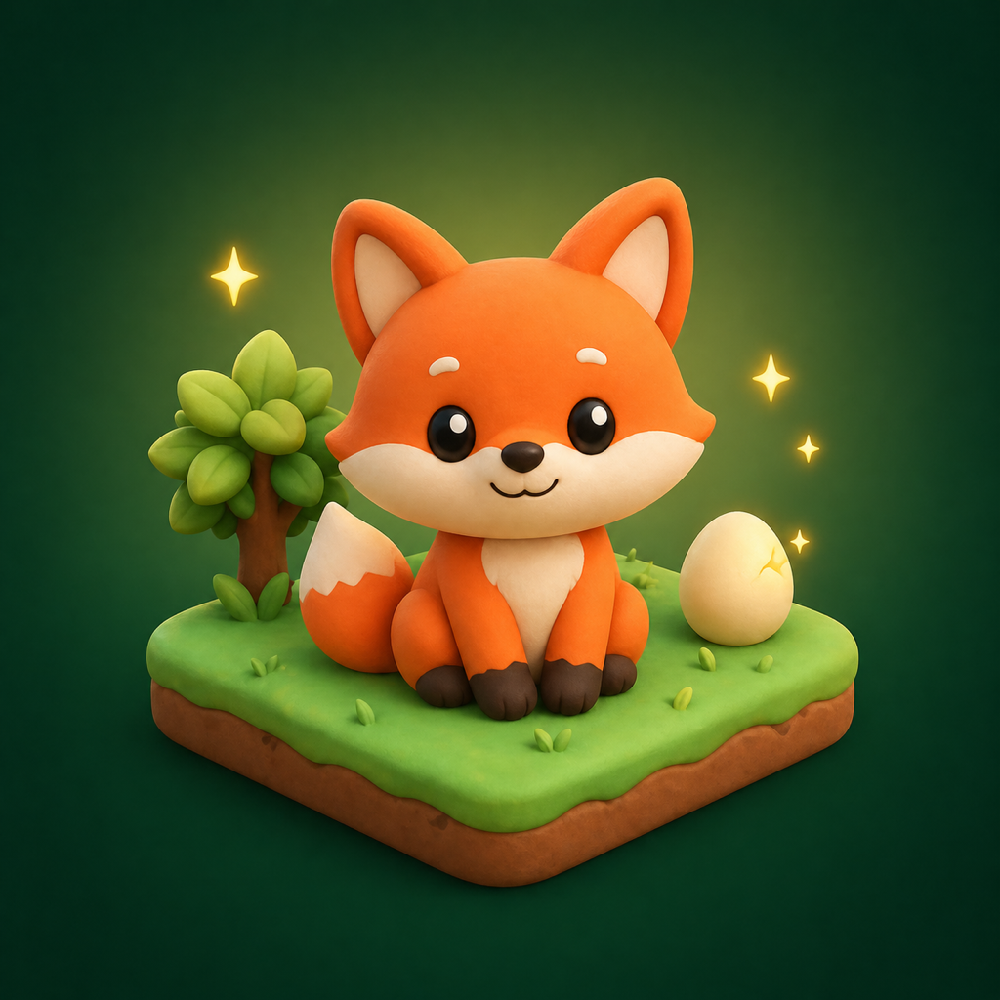

FocusPet
Turn your focus time into a cozy pet garden.
Pomodoro sessions hatch eggs into adorable pets. Arrange them across themed isometric maps as you build a focus habit — block distractions, earn coins, and grow a roster that's anything but ordinary.
Why FocusPet?
Focused Pomodoro
25, 45 or 90-minute sessions. Optional tags. Background timer with a Live Activity on the lock screen and Dynamic Island.
Hatching pets
Every focused minute fills a queued egg. From common foxes to mythic moon cats — a growing roster of species.
Block distractions
Pick apps to lock during a focus session. Built on Apple's Screen Time API — auto-unlocks when the session ends.
Themed maps
Start in the main garden. Unlock Forest, Beach, Mountain, Volcano and Sky — each with its own ornamental style.
Coin economy
Earn coins from every completed session. Spend them on new pets, garden expansions, or to clear the fog on fresh maps.
Stats that motivate
Weekly focus chart, tag breakdown, total focus time, completed sessions and your full collection — all in one place.
How it works
-
1
Pick a pet
Buy a starter, coin or premium pet from the Shop. Add an egg to your focus queue.
-
2
Focus
Start a 25–90 minute session. Lock your phone, leave the app — the timer keeps running in the background.
-
3
Grow your garden
A completed focus hatches your egg and earns coins. Place the new pet on your isometric map and keep going.
Start your first focus, hatch your first egg — your garden is waiting.
FocusPet
Odak süreni sevimli bir hayvan bahçesine dönüştür.
Pomodoro seansların yumurtaları sevimli hayvanlara dönüştürür. Onları temalı izometrik haritalarda yerleştirirken bir odak alışkanlığı kurarsın — dikkat dağıtıcıları engelle, coin kazan, sıradanın çok ötesinde bir koleksiyon büyüt.
Neden FocusPet?
Odaklanmış Pomodoro
25, 45 veya 90 dakikalık seanslar. İsteğe bağlı etiketler. Kilit ekranı ve Dinamik Ada'da Live Activity ile arka plan zamanlayıcısı.
Açılan yumurtalar
Her odak dakikası sıradaki yumurtaya birikir. Common tilkilerden Mythic ay kedilerine — sürekli büyüyen bir tür kataloğu.
Dikkat dağıtıcı engelleme
Odak seansı sırasında kilitlenecek uygulamaları seç. Apple'ın Screen Time API'si üzerinde; seans bittiğinde otomatik açılır.
Temalı haritalar
Ana bahçeyle başla. Orman, Kumsal, Dağ, Volkan ve Gökyüzü'nü sırayla aç — her birinin kendi süslemesi var.
Coin ekonomisi
Her tamamlanan seanstan coin kazan. Coinleri yeni hayvanlar, bahçe genişletmesi veya yeni haritaların sisini dağıtmak için harca.
Motive eden istatistik
Haftalık odak grafiği, etiket dağılımı, toplam odak süresi, tamamlanan seanslar ve tüm koleksiyonun — hepsi tek yerde.
Nasıl çalışır?
-
1
Bir hayvan seç
Mağaza'dan starter, coin veya premium hayvan al. Odak sırasına bir yumurta ekle.
-
2
Odaklan
25–90 dakikalık bir seans başlat. Telefonu kilitleyebilir, uygulamadan çıkabilirsin — süre arka planda işlemeye devam eder.
-
3
Bahçeni büyüt
Tamamlanan odak yumurtanı açar ve coin kazandırır. Yeni hayvanı izometrik haritana yerleştir, devam et.
İlk odağına başla, ilk yumurtanı aç — küçük bir bahçe seni bekliyor.